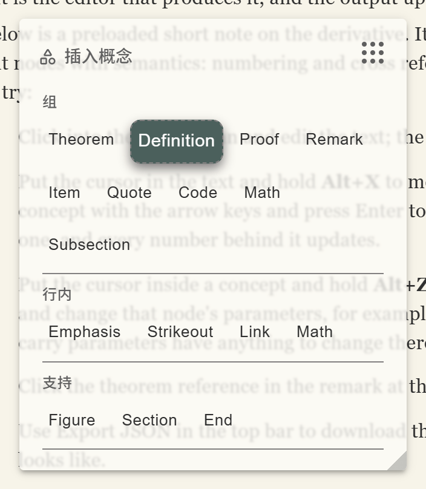
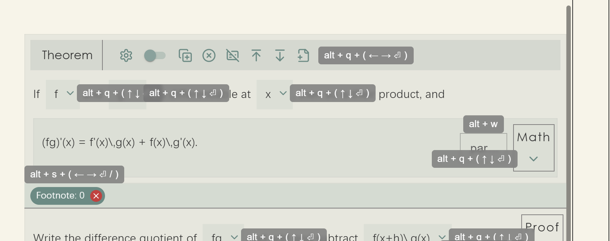

Keyboard Operation
The default editor ships a complete scheme for working without a mouse, built on the
@ftyyy/mouseless library. This page covers its model (why it is "hold a combination, then
use the arrow keys" rather than one shortcut per function), every combination, and the hint mechanism.
All of it comes with DefaultEditorComponent and needs no configuration.
Why this model
A structured editor faces an unavoidable tension: there are too many things to operate. Every node carries eight buttons, the sidebar has four, the concept panel holds dozens of concepts, the parameter panel however many parameters. Assigning a shortcut to each function exhausts the keyboard quickly, and nobody would remember the result.
The approach here is to cut the interface into several "spaces", each being a group of interface elements plus the combination that enters it. Hold that combination and you are in the space: the arrow keys stop acting on text and move a selection box within the space instead, Enter activates whatever is selected, and releasing the combination returns you to ordinary typing.
What has to be remembered, then, is only which combination belongs to which part of the interface, six in all; movement within a part is always the arrow keys. The price is that an operation takes two steps, entering and selecting. What you get for it is that key space never runs out, and a new button needs no key assigned to it, since it simply joins the sequence of its space.
Every combination
The table below is the complete list. The first five rows are spaces, entered by holding the combination and then using the arrow keys and Enter; the last three take effect directly.
| Keys | Scope | What the arrows do |
|---|---|---|
| Alt+Q | The buttons on the current node | Left and right move between buttons of one node, up and down move between nesting levels (up to the parent node, down into a child) |
| Alt+E | The sidebar | Up and down traverse the sidebar buttons, including any you added |
| Alt+X | The Insert Concept panel | Left and right move between concepts, up and down move to the visually nearest concept in the adjacent row; period and slash jump to the previous or next concept kind |
| Alt+Z | The Edit Parameters panel | Move between parameters; Enter puts the focus into that parameter's input |
| Alt+S | The abstract node chips on a node | Move between chips; Enter opens the corresponding abstract editor |
| Alt+W | The small input beside a node | Puts the focus straight into a UniversalExtra input |
| Ctrl+S | Global | Fires onSave, that is, your own saving logic |
| Ctrl+D | The abstract editor | Closes the open abstract editing window |
The browser default is suppressed for all of these, so Ctrl+S does not open a "save page" dialog.

The up and down movement under Alt+X deserves a note of its own. Buttons in the concept panel wrap automatically, and how many fit on a row depends on the panel's current width and on how long the concept names are, so "the same position one row up" is not a fixed offset in the sequence. What happens instead is that every keystroke measures the buttons where they actually are, finds the nearest row in the direction you asked for, and picks the button in it whose horizontal centre is closest. Consecutive vertical moves also remember the horizontal position you started from, so passing through a short row does not drag your position sideways, which is how moving a cursor vertically behaves in a text editor.
Key hints
Not remembering the combinations is normal, so the interface hints at them, and does so by default. Hold Alt by itself for a moment, pressing nothing else, and small labels appear across the interface giving the combination for each part along with the arrow keys it accepts. Release and they go away.

alt + q + ( ← → ⏎ ), meaning that after Alt+Q the left and right arrows move and
Enter activates; the abstract node row reads alt + s and the small input on the
right alt + w. Each hint gives both the combination and the keys it accepts.
"A moment" is about two hundred milliseconds. The delay is there because Alt participates in every combination, so hints appearing the instant it goes down would flash on every ordinary operation. Note also that hints appear only while Alt is held alone: once a second key goes down, Alt+X for instance, you evidently know where you are going and the hints have no reason to stay in the way.
The fourth sidebar button is the master switch for all of this. Turn it off once the keys are familiar
and holding Alt produces no hints. The switch is itself an ordinary component
(ShowHintControlButton), so if you are building your own interface you can put it elsewhere.
How this relates to typing
Worth noting: spatial navigation only takes over the arrow keys while the combination is held. Release it and the arrows, Enter and Backspace all return to Slate's ordinary text editing with the cursor still where it was. This navigation is a temporary state layered over text editing rather than a mode you have to leave, so there is no way to lose track of which mode you are in and type a line of nonsense.
category
parameter, press Enter and change it to Lemma; release and carry on writing.